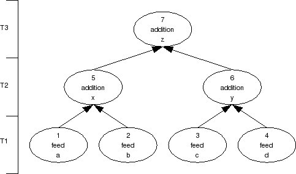
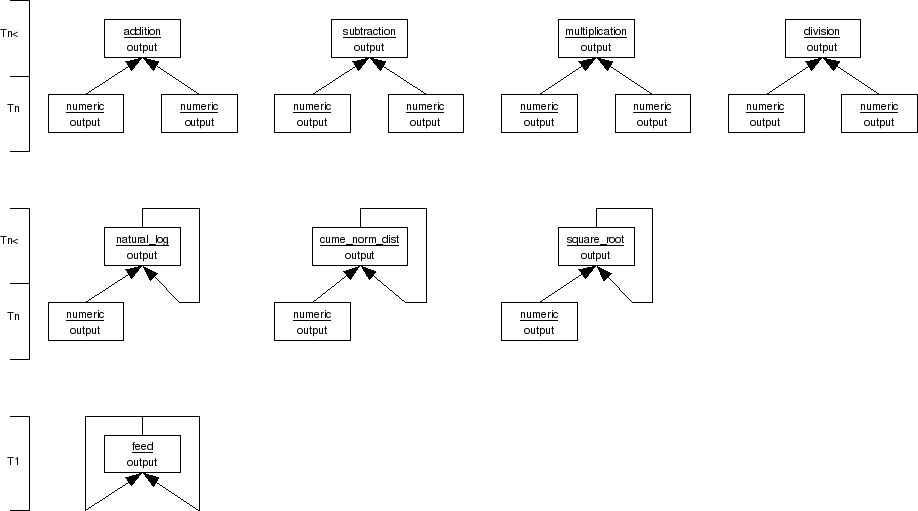

| Download version | 1.0 |
| Download licence | BSD |
| Trad4 version | 2.0.2 |
| Author | schevans |
| Date | 13-01-09 |
This is a working model of what was a thought-experiment discussed in Appendix C of The Manual v2_Beta_04. It was a thought experiment then as there were limitations in the trad4 infrastructure that meant it could not be built. Those limitations have now been fixed and the model is presented here.
The plan is to create a series of objects that perform primitive mathematical functions - plus, minus, natural_log, cume_norm_dist etc., and configure the relationship between these objects to solve a particular problem. The interesting thing about this approach is that once we've created the application, we can configure the relationship between the objects at run-time by manipulating data in the database.
Inheritance of interface was introduced to allow for this model to be built. This allows for types with different functions to share the same interface to a base type (analogous to a pure virtual base class in C++). In this model our base type is called 'numeric', and this in turn allows for any type to connect to any other because any derived type 'is a' numeric. This will be covered further below and in much greater detail once I get round to updating The Manual.
We'll start with a simple arithmetical example before moving onto the more complex problem of bs_delta as discussed in Appendix C. To switch between these data sets set the APP_DB env var to point to the database you want to run against and restart the application:
general_computer$ export APP_DB=data/general_computer_bs_delta.db general_computer$ general_computer
The default database - general_computer.db is a copy of general_computer_simple1.db.
Our first example is the simple DAG at the beginning of The Manual:
z = x + y where x = a + b and y = c + d
This gives rise to the following concrete diagram:
We need to pick some arbitrary values for a,b,c and d, and these have been set to:
a = 8 b = 3.5 c = 7.3 d = 11
From this we can see we'll need two operators, feed and addition. The t4 files are discussed in the bs_delta example below, but for now let's just look at the output of running general_computer against data set simple1. This was run using a single thread in to keep the output orderly.
Tier 1 running.
calculate_feed( a )
feed_output: 8
calculate_feed( b )
feed_output: 3.5
calculate_feed( c )
feed_output: 7.3
calculate_feed( d )
feed_output: 11
Tier 1 ran 4 objects in 0.00272799 seconds.
Tier 2 running.
calculate_addition( x )
addition_output: 11.5
calculate_addition( y )
addition_output: 18.3
Tier 2 ran 2 objects in 0.00145507 seconds.
Tier 3 running.
calculate_addition( z )
addition_output: 29.8
Tier 3 ran 1 objects in 0.000246048 seconds.
From this we can see the T1 feeds running, confirming their starting value in the debug. Then we can see the T2 objects running where x and y are calculated from their respective feed values. Lastly we see the T3 object fire, the result of which is indeed the sum of the feeds.
Now we'll move onto the more complex data set "bs_delta" which will solve for delta in the closed-form Black-Scholes for European call options on non-dividend paying stocks. This is given by:
It doesn't matter if you're not familiar with this equation - it's the arithmetic itself we're interested in, not what any of it actually means or how this equation was arrived at.delta = N(d1) where d1 = (ln(S/K) + rT + vvT/2) / v * sqrt(T) and N(x) is the cumulative normal distribution of x and S = stock price K = strike price r = risk free rate v = volatility vv = volatility squared T = time to maturity
First we start by identifying the operations we'll need. Looking at the equation above this gives us
For completeness, we may as well include subtraction as while it's not used in the above equation it will be used in other configurations.
As discussed, this model uses inheritance of interface, so our abstract diagram looks a little strange. This is because as each type isa numeric, any object can connect to any other two objects.
There are a couple of exceptions to this. Firstly there are the feed objects which, looking at the concrete diagrams don't subscribe to anything. But as a feed isa numeric, and numeric subscribes to two objects, how is this achieved? The answer is we define the feeds as subscribing to themselves. As it's last_published timestamp will never be greater than it's last_publish timestamp, the object will only ever fire at start-up or on reload.
The second exception are the square_root, natural_log and cume_norm_dist types as these have only one input. These are handled in a similar manner to the feeds where the second spare input is tied up to itself.
It's important to understand that these self-loops have nothing to do with the feedback loops encountered in heat_equation_1d - they are simply a device to tie up the unused inputs and they have no effect on the operation of the system. Arguably they shouldn't be shown on any diagram but I've included them for completeness.
It's also worth mentioning the axis. As any object can connect to any other object below it in the hierarchy, the axis labels are given as relative. While in theory a feed object could exist at any tier, it is customary to keep them on T1.
Lastly, the numeric type itself is not shown as it doesn't do anything - it exists solely so that the rest of the types can inherit it's interface.
You'll notice that this graph differs quite substantially from that presented in Appendix C. The first reason for this is that there were many errors in the graph in Appendix C which did not show up until I tried to implement it. The second reason is as this is a concrete graph showing actual objects - i.e. instantiated types - the correct notation is to use ovals. Rectangles are used in the abstract diagram which shows the types independent of any data.
As discussed, this model uses inheritance of interface. The syntax of this is pretty straightforward. Firstly, the base type is defined as normal:
sub
numeric numeric1
numeric numeric2
static
double value
pub
double output
This 'one size fits all' approach is not ideal - for example the 'value' variable is only used for the feeds and thus redundant on the 1-input and 2-input types. This approach is required so that the isa covenant is not violated in the trad4 internals. This may be addressed in later trad4 versions, but there are some subtleties here that may not be related to the trad4 architecture.
The rest of the types are defined as implementing this type. The syntax for this is simply, looking at addition:
implements numeric
The rest of the types are defined in the same way and are omitted for brevity.
The actual mechanics of a trad4 system should be familiar to you by now, but I include an excerpt from the logfile so you can see it's operation. Again, only one thread was used to keep the output clear.
Tier 1 running.
calculate_feed( S )
feed_output: 42
calculate_feed( K )
feed_output: 40
calculate_feed( r )
feed_output: 0.1
calculate_feed( T )
feed_output: 0.5
calculate_feed( v )
feed_output: 0.2
calculate_feed( 2 )
feed_output: 2
Tier 1 ran 6 objects in 0.00551391 seconds.
Tier 2 running.
calculate_division( S/K )
division_output: 1.05
calculate_multiplication( rT )
multiplication_output: 0.05
calculate_square_root( RtT )
square_root_output: 0.707107
calculate_multiplication( vv )
multiplication_output: 0.04
Tier 2 ran 4 objects in 0.00329208 seconds.
Tier 3 running.
calculate_natural_log( ln(S/K) )
natural_log_output: 0.0487902
calculate_multiplication( vRtT )
multiplication_output: 0.141421
calculate_division( vv/2 )
division_output: 0.02
Tier 3 ran 3 objects in 0.00077486 seconds.
Tier 4 running.
calculate_addition( ln(s/K)+rT )
addition_output: 0.0987902
calculate_multiplication( (vv/2)T )
multiplication_output: 0.01
Tier 4 ran 2 objects in 0.000144958 seconds.
Tier 5 running.
calculate_addition( ln(s/K)+rT+(vv/2)T )
addition_output: 0.10879
Tier 5 ran 1 objects in 6.8903e-05 seconds.
Tier 6 running.
calculate_division( d1 )
division_output: 0.769263
Tier 6 ran 1 objects in 6.79493e-05 seconds.
Tier 7 running.
calculate_cume_norm_dist( DELTA )
cume_norm_dist_output: 0.779131
Tier 7 ran 1 objects in 7.00951e-05 seconds.
All tiers ran 18 objects in 0.0105832 seconds.
For the record, the value of delta=0.779131 is correct, as described in black_scholes/spreadsheets/WorkedExample1.ods
Firstly, I'll be the first to admit that setting up the data is very fiddly work, and I've been thinking about writing/adapting an equation parser to generate the data sets.
Second, the model itself could be extended to include trigonometric operators etc.